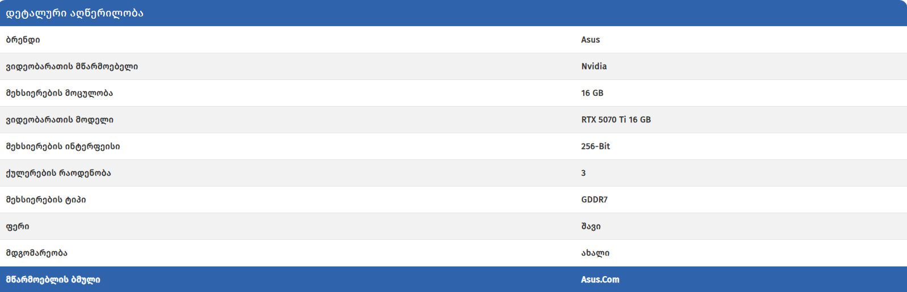
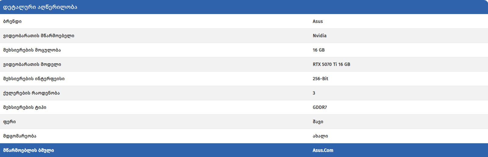
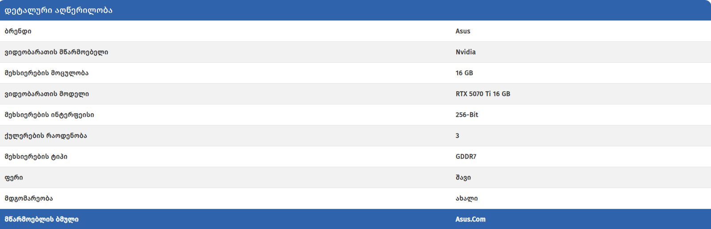

ვიდეობარათი - Asus Tuf Gaming RTX 5070 Ti 16 GB Oc
3,280.00ლ3,850.00ლ (-15%)
კოდი: 7218
მარაგშია: დიდი დიღომი
გარანტია: 1 წელი
ბრენდი: Asus
კატეგორია: ვიდეობარათები
მიწოდების პირობები
ვიდეობარათის მოდელი: RTX 5070 Ti 16 GB


 
